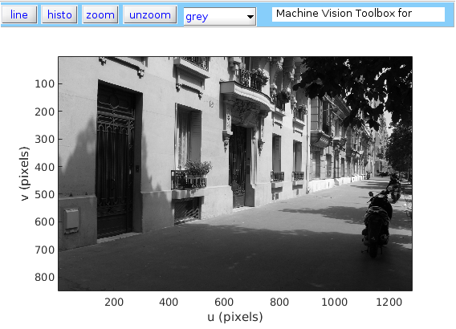

Robotic Vision
Contents
Lecture 2 - Getting an image into MATLAB – MATLAB transcript
clear all; close all; clc;
Load an image into the MATLAB variable im by using the iread() function and supplying the file path as a string input argument.
im = iread('street.png');
Display the image using the function idisp().
idisp(im)
Now extract the metadata from the image file by provide two output arguments to the iread() function and display the data.
[im meta] = iread('street.png');
meta
meta =
Filename: '/home/wendel/Class/Robotic Vision/repo/Lectur...'
FileModDate: '27-Oct-2015 17:11:30'
FileSize: 531489
Format: 'png'
FormatVersion: []
Width: 1280
Height: 851
BitDepth: 8
ColorType: 'grayscale'
FormatSignature: [137 80 78 71 13 10 26 10]
Colormap: []
Histogram: []
InterlaceType: 'none'
Transparency: 'none'
SimpleTransparencyData: []
BackgroundColor: []
RenderingIntent: []
Chromaticities: []
Gamma: []
XResolution: []
YResolution: []
ResolutionUnit: []
XOffset: []
YOffset: []
OffsetUnit: []
SignificantBits: []
ImageModTime: '1 Oct 2009 22:28:37 +0000'
Title: []
Author: []
Description: []
Copyright: []
CreationTime: []
Software: []
Disclaimer: []
Warning: []
Source: []
Comment: []
OtherText: []
Some elements of the structure are structures themselves and more information can be found. For example, have a look at the camera information
% meta.DigitalCamera
The pixel value information can also be accessed directly by addressing the element. For example, the value at (u,v)-coordinate (562,653) can be found.
im(653,562)
ans = 66
Notice that the indices have been reversed as comared to the coordinates. This is due to the indexing of matrices being (row, column) where images are described as (horizontal position, vertical position).